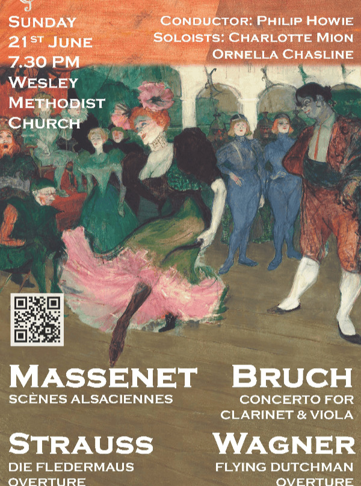
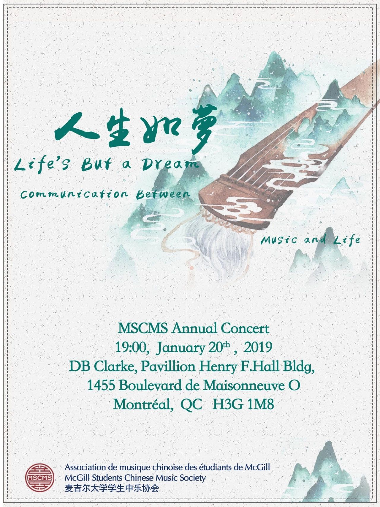

Music
I play guzheng and double bass, moving between Chinese traditional music and the orchestral repertoire.
I have played guzheng since first grade and hold a Grade 9 certification. I began double bass in third grade, and have played in school orchestras and my high school’s jazz band.
At McGill, I played guzheng with the Chinese Orchestra from 2017 to 2020. At MIT, I performed with the Mass Ave Chinese Music Ensemble, including a guzheng duet at the 2024 Chinese New Year Concert. More recently, I have played double bass with the Cambridge Graduate Orchestra.
Performances & ensembles
Wagner, Bruch, Strauss & Massenet
Cambridge Graduate Orchestra · Wesley Methodist Church, Cambridge
Concert announcement ›

Chinese New Year Concert
Mass Ave Chinese Music Ensemble · MIT Killian Hall
I performed The Fragrance of Jasmine Blossom in a guzheng duet with Jiaru Li.
Ensemble on Instagram ›
View concert programme ↗


Life’s But a Dream
McGill Chinese Orchestra · D.B. Clarke Theatre, Concordia University
As VP of Music, I helped assemble the full music programme, performed on guzheng, and conducted two pieces.
Concert announcement ›
